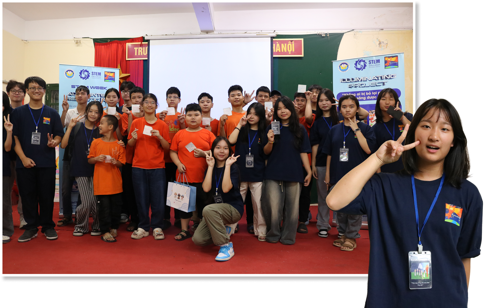
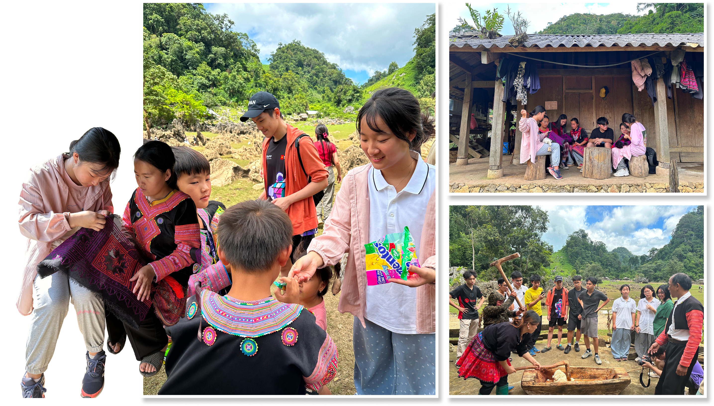
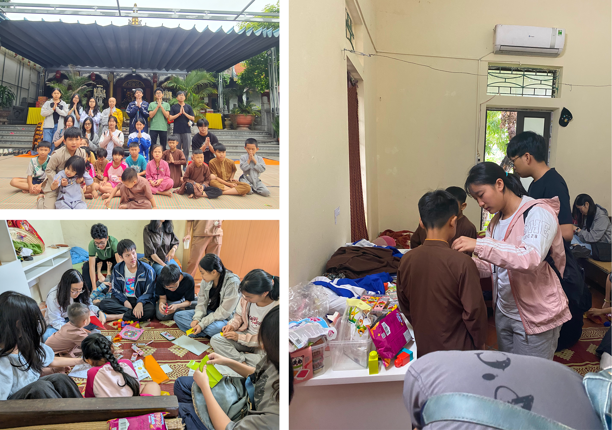

Illuminating Project
Although I was on the public relations team, I also joined activities and meetings with children with disabilities.
Tech Camp
At a H'Mong village, I combined community service with cultural exchange.


Yen Ninh Pagoda
I spent time playing with children while the monks were preparing for the chanting session. Also, I did some simple tasks around the temple.